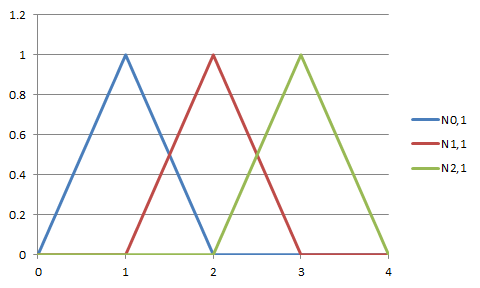

\(
\newcommand{\bm}[1]{\boldsymbol{#1}}
\newcommand{\d}{{\rm d}}
\newcommand{\div}{\nabla\cdot}
\newcommand{\grad}{\nabla}
\newcommand{\e}[1]{\bm{e}_{#1}}
\newcommand{\pard}[3]{\frac{\partial^{#2} #3}{\partial #1^{#2}}}
\newcommand{\T}{^{\rm T}}
\newcommand{\l}{<}
\newcommand{\g}{>}
\)
前回、Bスプライン曲線\(\bm{C}(t)\)は基底関数\(N_{i,p}\)とコントロールポイント\(\bm{P}_i\)
を用いて、
\begin{align}
\bm{C}(t)
&=
\sum_{i=0}^{n-1} \bm{P}_i N_{i,p}(t)
\end{align}
と表されることを述べた。さて、今回はこの曲線上の点を求める方法について述べる。
というのも、基底関数は殆どの領域で0になる。例えば、前回出てきた1次の基底関数のグラフを見る。

このグラフにおいて、\(0\leq t \leq 1\)の範囲で0でない基底関数は\(N_{0,1}\)のみである。
つまり、上の曲線を求める式は次のようになる。
\begin{align}
\bm{C}(t)
&=
\sum_{i=0}^{n-1} \bm{P}_i N_{i,1}(t) \\
%
%
&=
\bm{P}_0 N_{0,1}(t) \qquad (0\leq t \leq 1)
\end{align}
即ち基底関数の値はその範囲で0にならないもののみについて計算すればよいことが分かる。
そこで、まずは基底関数が0とそれ以外をとる領域はそれぞれ何処なのかを調べる。
基底関数の再帰式
\begin{align}
N_{i,p}
&=
\frac{t -t_i}{t_{i+p} -t_i} N_{i,p-1}
+
\frac{t_{i+p+1} -t}{t_{i+p+1} -t_{i+1}} N_{i+1,p-1}
\end{align}
を次のような模式図に置き換えて考えてみる。
\begin{xy}
\xymatrix{
N_{i,p} & \\
N_{i,p-1} \ar[u]^{\times \frac{t -t_i}{t_{i+p} -t_i}} &
N_{i+1,p-1} \ar[lu]_(0.3){\times \frac{t_{i+p+1} -t}{t_{i+p+1} -t_{i+1}}} \\
}
\end{xy}
これを帰納的に考えると、
\begin{xy}
\xymatrix{
N_{i,p} & & & \\
N_{i,p-1} \ar[u] &
N_{i+1,p-1} \ar[lu] & & \\
\ar[u] &
\ar[lu] \ar[u] &
\ar[lu] & \\
N_{i,0} \ar@{.>}[u] \ar@{.}[rrr] & & &
N_{i+p,0} \ar@{.>}[lu] \\
}
\end{xy}
即ち、再帰を繰り返していくと、\(N_{i,p}\)は\(N_{i,0}\)から\(N_{i+p,0}\)までが
出てくることが分かる。\(N_{i,0}\)は定義より
\begin{align}
N_{i,0}(t)
&=
\left\{
\begin{array}{ll}
1 & (t_i \leq t \l t_{i+1}) \\
0 & (\text{otherwise})
\end{array}
\right.
\end{align}
であることを考えると、\(N_{i,p}\)は\(t_i \leq t \l t_{i+p+1}\)では0ではない。
今度はこれを逆に考えてみる。\(t\)が\(t_k \leq t \l t_{k+1}\)であるとき、
0次基底関数\(N_{i,0}\)の中では\(N_{k,0}\)のみが0ではないのだから、この\(N_{k,0}\)
が出てくる基底関数\(N_{i,p}\)は全部でどれなのかを考える。ここで再帰結果に
\(N_{k,0}\)が出てくる基底関数のみがBスプライン曲線の計算のときに有効となる。
\begin{xy}
\xymatrix{
N_{k-p,p} \ar@{.}[rrr] & & &
N_{k,p} \\
& \ar@{.>}[lu] & & \ar@{.>}[u] \\
& & N_{k-1,1} \ar[lu] \ar[u] & N_{k,1} \ar[lu] \ar[u] \\
& & & N_{k,0} \ar[u] \ar[lu]
}
\end{xy}
この図から、\(N_{k-p,p}\)から\(N_{k,p}\)までを考慮して足し合わせればいいことが分かる。
（逆に、他の\(N_{i,p}\)では\(N_{k,0}\)が出てこない）
従って、曲線を求める式は次のようになる。
\begin{align}
\bm{C}(t)
&=
\sum_{i=0}^{n-1} \bm{P}_i N_{i,p}(t) \\
%
%
&=
\sum_{i=k-p}^k \bm{P}_i N_{i,p}(t) \\
%
%
&\qquad \left(
t_k \leq t \l t_{k+1}
\right)
\end{align}
これにより、これまで\(n\)回足し合わせていたものが\(p+1\)回足し合わせればよくなった。
さて、実は話はまだこれに終わらない。タイトルであるde Boorのアルゴリズムはこれまでの議論
にはまだ出ていない。というのも、まだ直接計算するのは無駄があるからだ。
\begin{xy}
\xymatrix{
*+[o][F]{N_{k,p}} & & & \\
N_{k,p-1} \ar[u] &
N_{k+1,p-1} \ar[lu] & & \\
\ar[u] &
\ar[lu] \ar[u] &
\ar[lu] & & \\
*+[o][F]{N_{k,0}} \ar@{.>}[u] \ar@{.}[rrr] & & &
N_{k+p,0} \ar@{.>}[lu]
}
\end{xy}
総和において\(N_{k,p}\)がある項を代表に考えてみる。ここから実際にほしいルートは\(N_{k,0}\)
である（\(N_{k,0}\)だけが0でないから）。つまりは真っ直ぐ下に進むルートだけが
欲しいのである。だがしかし、再帰式通りに計算を進めていくと、\(N_{k+1,0}\)や
\(N_{k+p,0}\)などに辿りつく計算も行ってしまう。これでは非常に無駄だ。そこを
どうにかしようというのがde Boorのアルゴリズムだ。
実はさっき上で出た逆三角形の模式図がヒントとなる。簡単な例、次数1から始める。
\begin{xy}
\xymatrix{
N_{k-1,1} & & N_{k,1} & & \\
& {\displaystyle \times \frac{t_{k+1} -t}{t_{k+1} -t_k}} \ar[lu] &
{\displaystyle \times \frac{t -t_k}{t_{k+1} -t_k}} \ar[u] & & \\
\ar@{.>}[uu] & &
N_{k,0} \ar@{-}[lu] \ar@{-}[u] & &
\ar@{.>}[lluu]
}
\end{xy}
この場合、実線の矢印のルートのみを通れば良いのが分かるだろうか？
曲線を求める式は次のようになる。
\begin{align}
\bm{C}(t)
&=
\sum_{i=k-1}^{k} \bm{P}_i N_{i,1}(t) \qquad (\because p=1)\\
%
%
&=
\bm{P}_{k-1} N_{k-1,1}(t)
+
\bm{P}_k N_{k,1}(t) \\
%
%
&=
\bm{P}_{k-1} \cdot \frac{t_{k+1} -t}{t_{k+1} -t_k} \cdot N_{k,0}(t)
+
\bm{P}_k \cdot \frac{t -t_k}{t_{k+1} -t_k} \cdot N_{k,0}(t) \\
%
%
&=
\bm{P}_{k-1} \cdot \frac{t_{k+1} -t}{t_{k+1} -t_k}
+
\bm{P}_k \cdot \frac{t -t_k}{t_{k+1} -t_k}
\qquad (\because t_k \leq t \l t_{k+1}) \\
%
%
&=
\bm{P}_{k-1}(1-\alpha)
+
\bm{P}_{k}\alpha \\
%
%
&\qquad \left(\alpha = \frac{t -t_k}{t_{k+1} -t_k} \right)
\end{align}